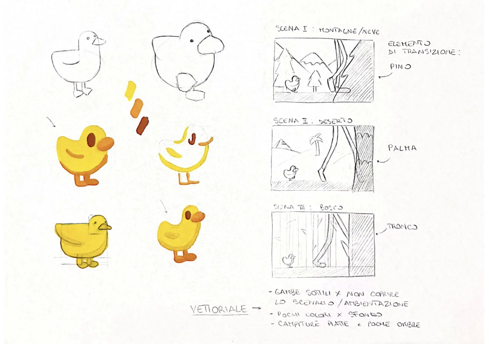
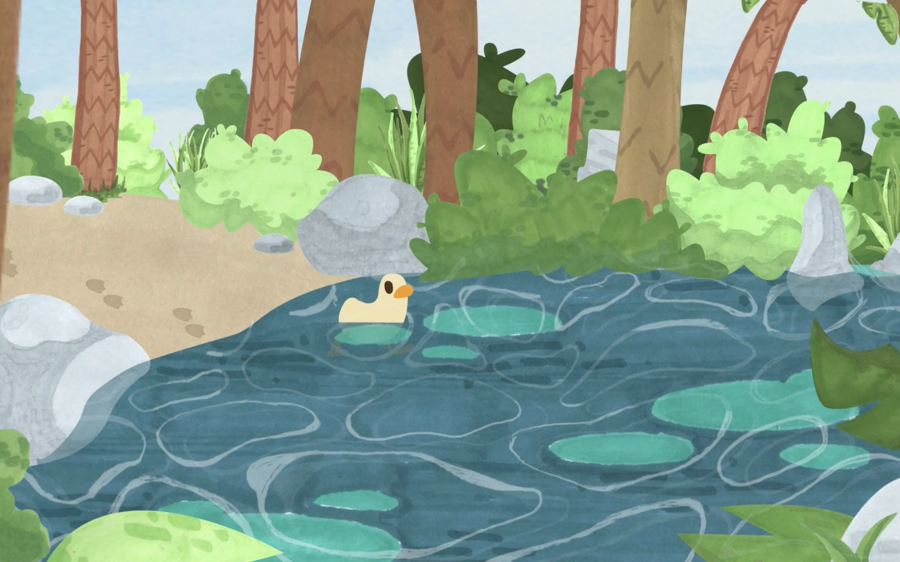
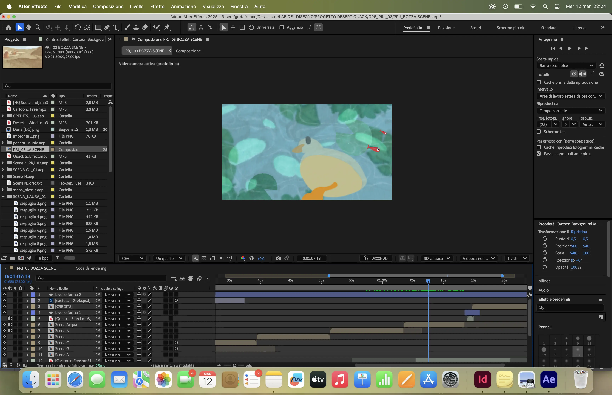
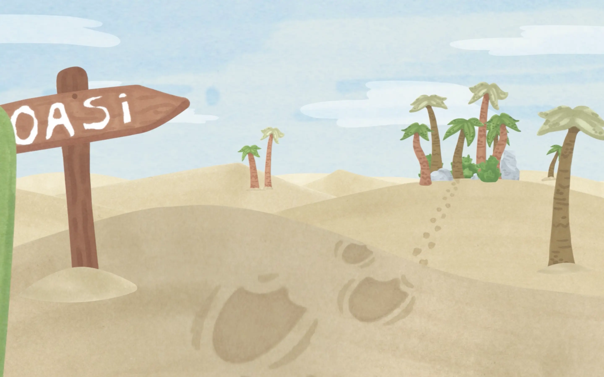

In this motion design project, the daisy, the central element of my brand identity, expands to become a visual backdrop, combining vector illustration and micro-motion design. The graphic concept plays on my logo, the daisy, depicting myself relaxing on a giant flower. I chose to use animation not as a showy element, but as a subtle detail to enrich the atmosphere of the illustration and make it more memorable.




The animation was designed with a minimalist approach. Starting with a static illustration created in Illustrator, I introduced a barely perceptible movement in After Effects: a gentle swaying of the flowers, as if stirred by a gentle breeze. This choice was deliberate: the subtle movement serves to emphasise the calm and relaxed atmosphere of the scene, adding depth to the image without compromising its clean vector style.